Go to GDrive: Link to download mods in one click.
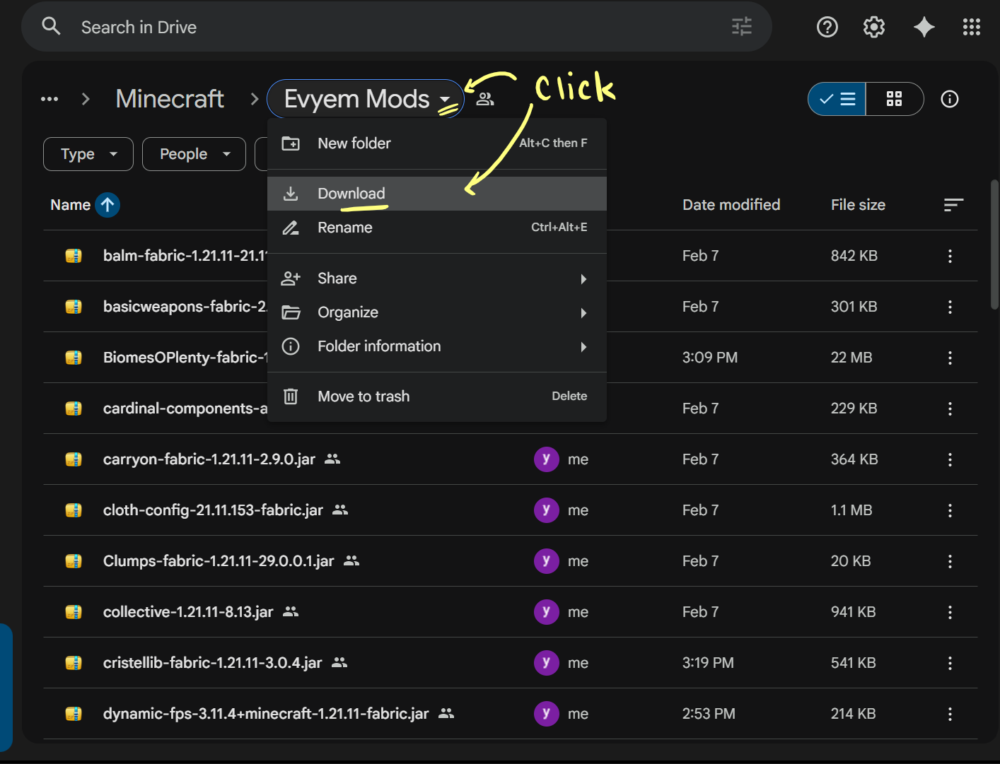
Go to SKLaucher Website: SKLauncher and Install SKLauncher on your computer.
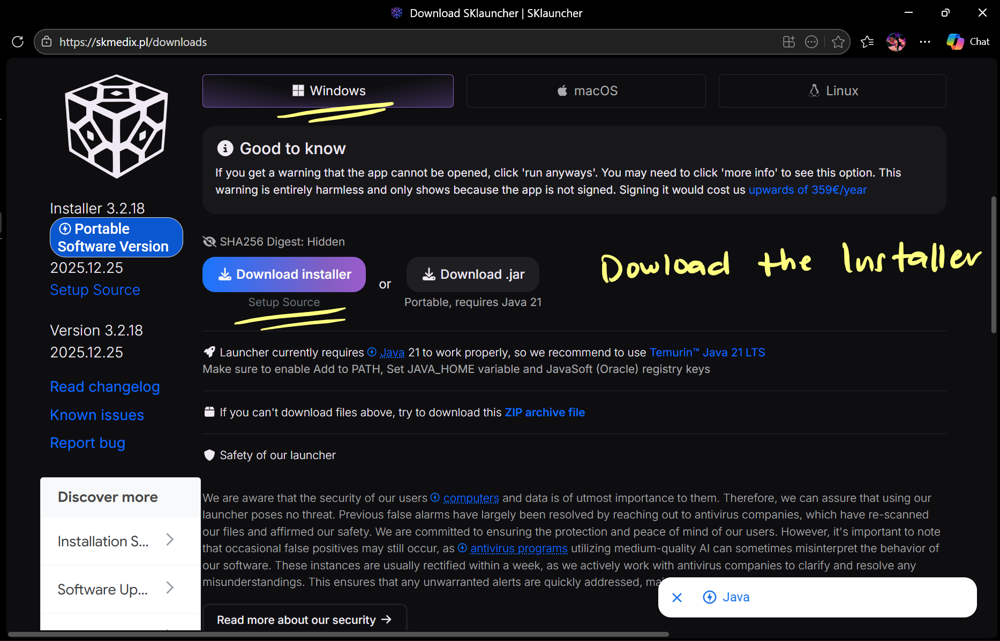
Open SKLauncher and click 'Switch to offline mode'.
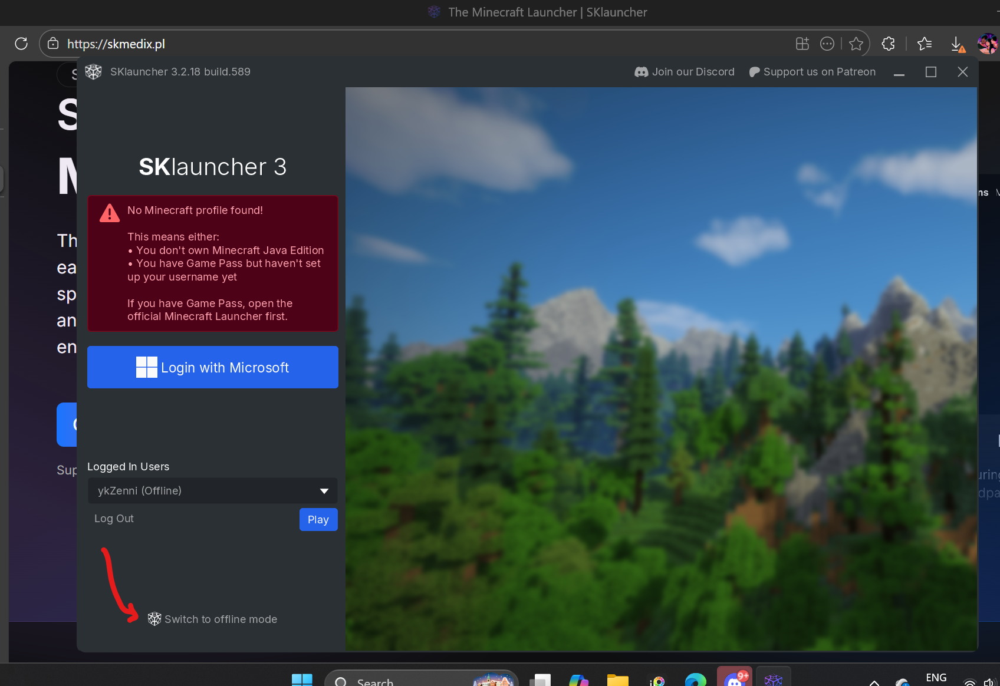
Enter your username and click log in.
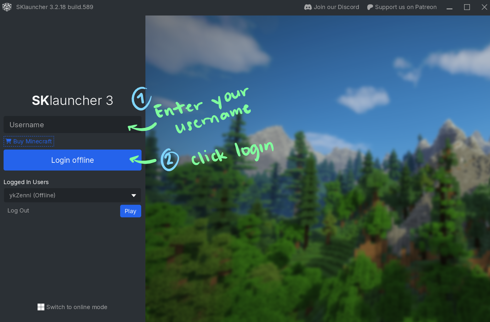
After logging in, click 'Installations Manager'
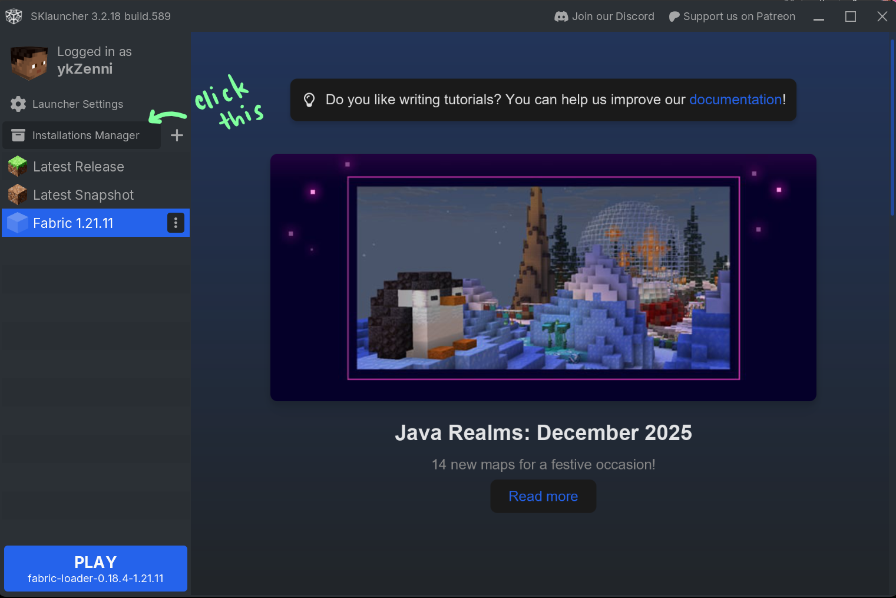
Click 'Add' to create a new installation.
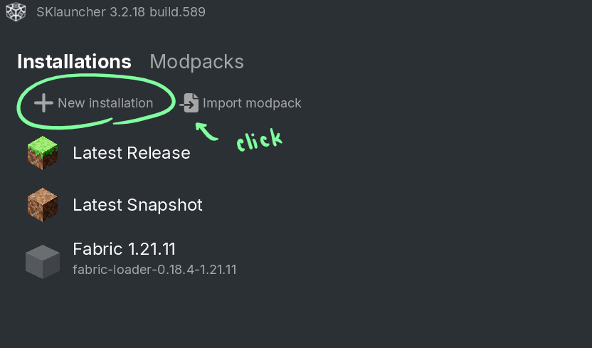
Name your installation 'Fabric 1.21.11', select the Fabric version and last put a check mark
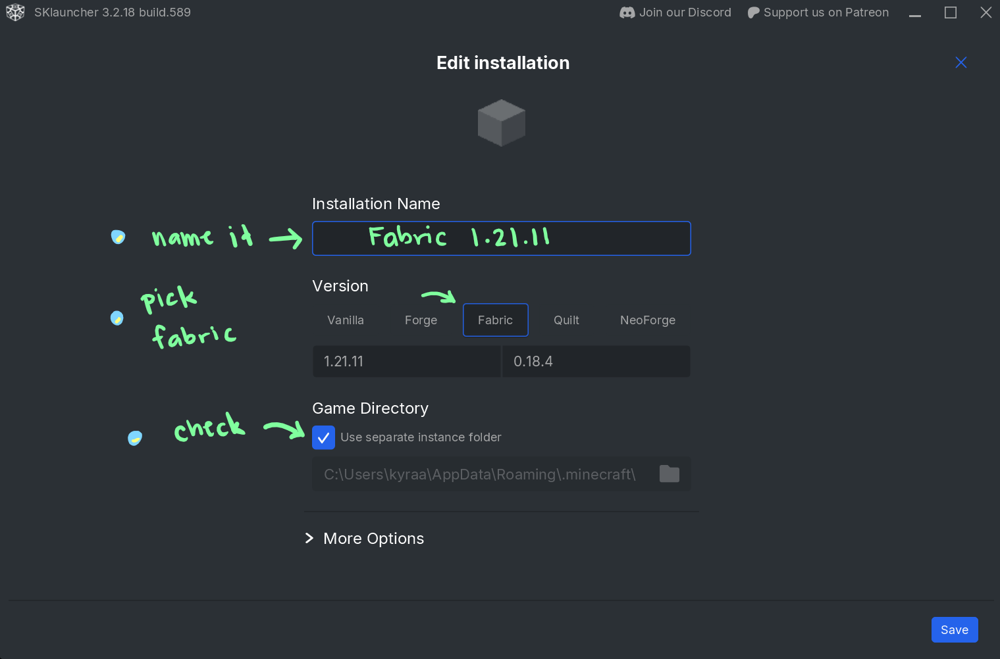
Click 'Save' to save your installation.
Go back, select the Fabric 1.21.11 and click 'Play' to launch Minecraft.
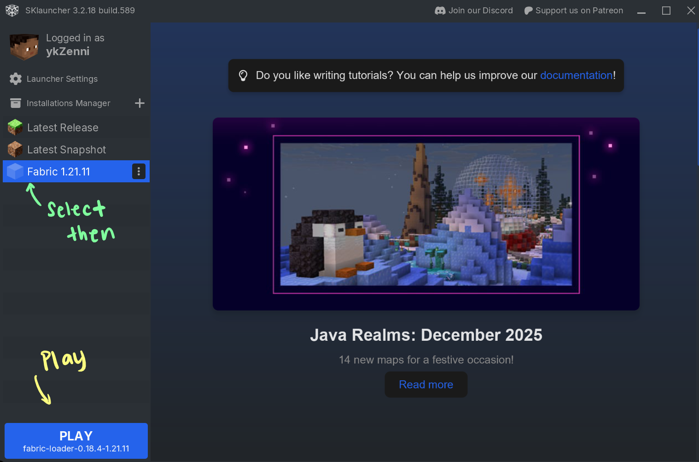
After lauching, quit the game.
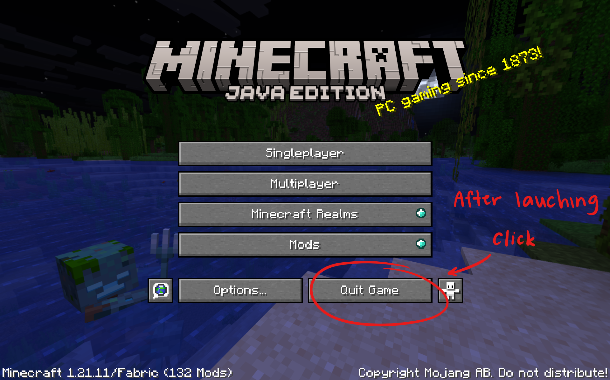
Go back to the installations manager, hover the Fabric 1.21.11 and click the folder icon.
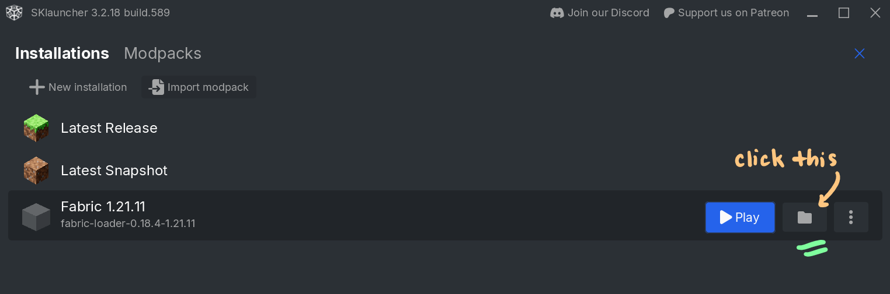
Open the 'mods' folder and move/paste all the downloaded mods into it.
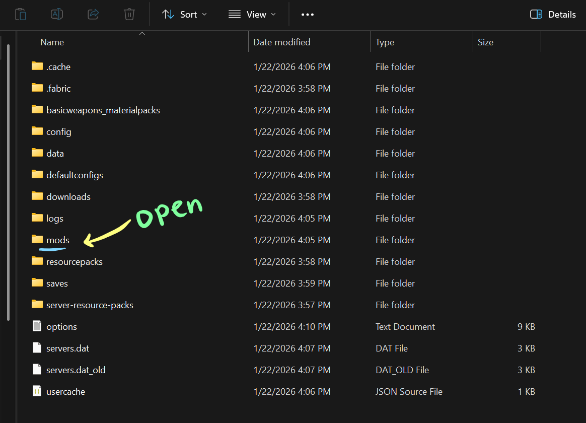
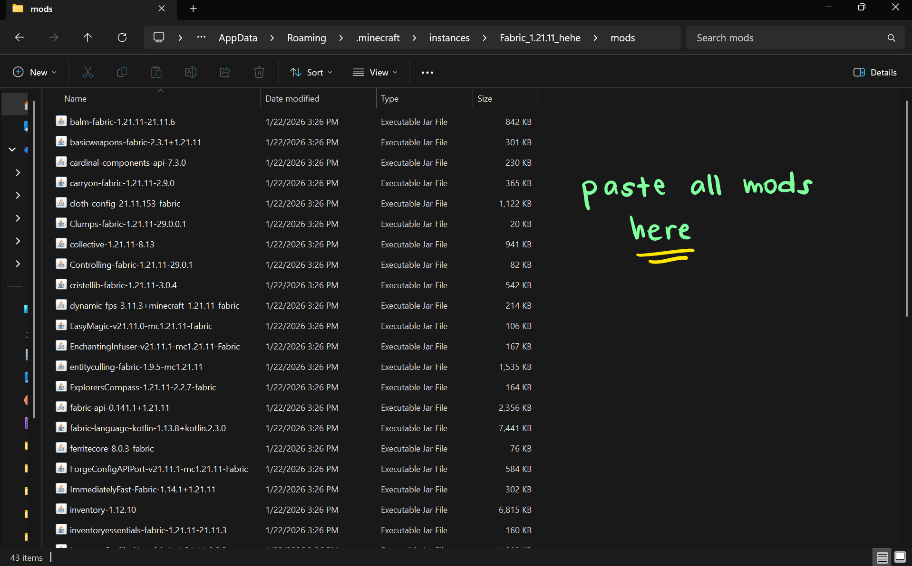
Go back to SKLauncher and click 'Play' to launch Fabric 1.21.11 with the mods.

Select Multiplayer, add Server and enter the server IP address. Click Done.
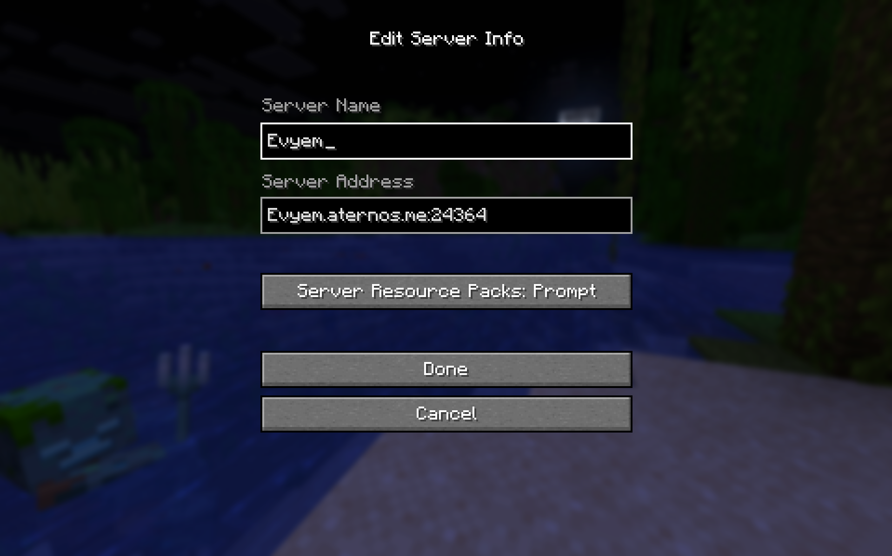
Finally, click Join Server YEYYY.